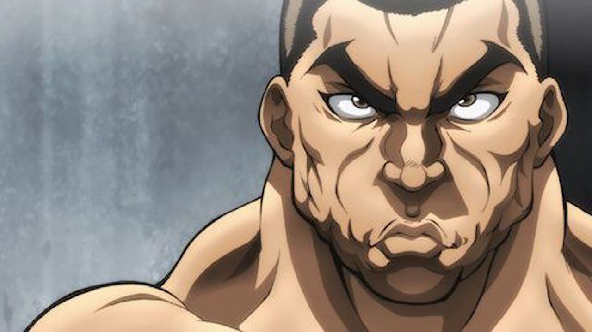
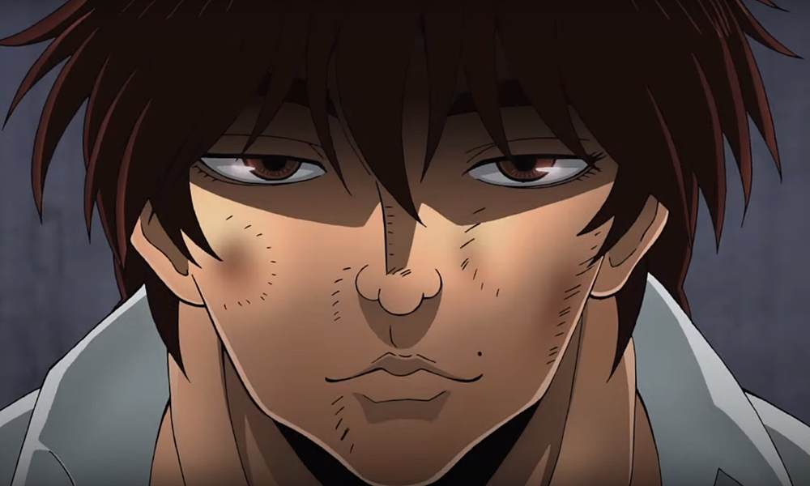
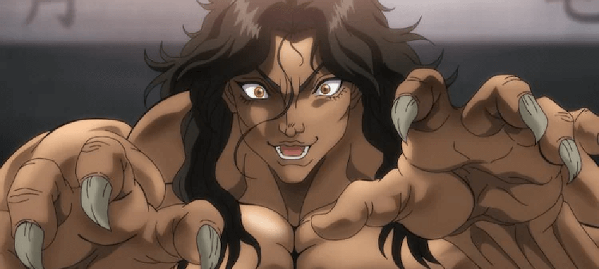

KENGAN ASHURA
Matheus Pereira

Matheus Pereira
Kengan Ashura é um anime baseado no mangá homônimo escrito por Yabako Sandrovich e ilustrado por Daromeon.
A série retrata a vida cotidiana de Yamashita Kazuo,
um trabalhador de meia idade com uma vida patética. ,
Tudo muda para sempre quando ele vê uma briga de rua,
a primeira vez que encontra Tokita Ohma, um homem que
não deseja nada além de provar que é o mais forte.
A partir deste momento, as coisas não seriam mais as mesmas,
e Kazuo encontraria uma nova razão para viver, superando a monotonia de sua vida.

personagens
Baki Hanma

PICKE
